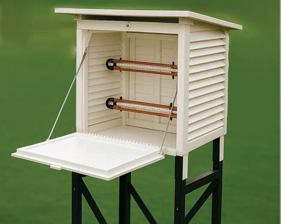

![Figure 1, maximum and minimum thermometers: Two tall glass thermometers stand side by side, each with a loop at the top, a rounded bulb at the bottom, and a Celsius scale marked from minus 20 to 40 in five-degree intervals. On the left, the maximum thermometer contains a blue mercury column rising from the bulb to about 25 degrees Celsius. A small index marker sits inside the tube near 13 degrees, and the empty space above the mercury is labelled vacuum. On the right, the minimum thermometer contains a red alcohol column rising to about 23 degrees Celsius. Its index marker is near 13 degrees, with vacuum above the alcohol. Leader lines label the vacuum, index, mercury, alcohol and bulb.](images/pg058_im002_corrected.png)
Vacuum.
Index.
Mercury.
Alcohol.
Bulb.
(a) Maximum thermometer
(b) Minimum thermometer
Figure 1: Maximum and Minimum thermometer
The maximum and minimum thermometers are kept in a special box called a Stevenson screen. The Stevenson screen is a wooden box painted white. The white colour helps reflect light. This reflection prevents solar radiation from affecting the temperature readings. Figure 2 shows the Stevenson screen.

Figure 2: Stevenson screen